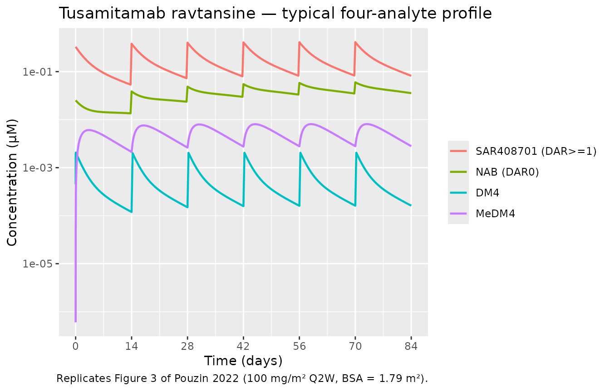
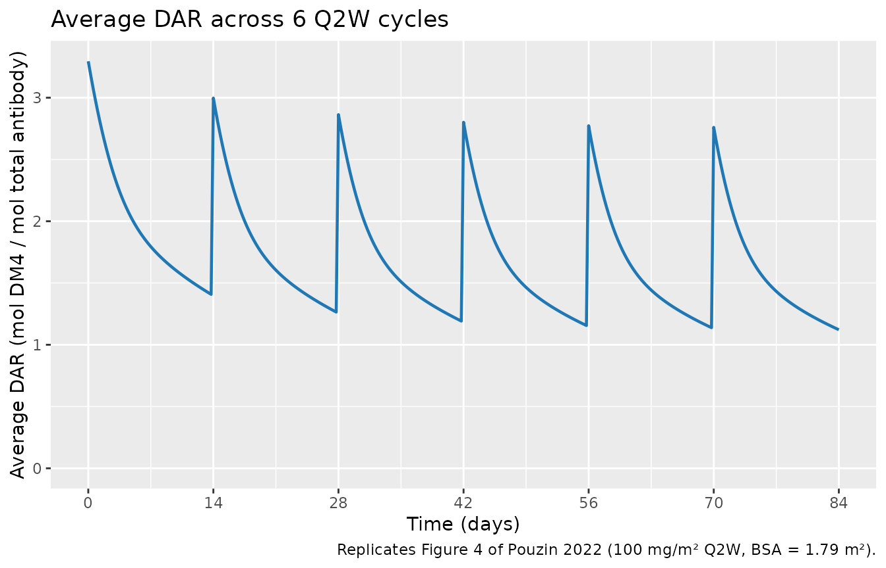

Tusamitamab (Pouzin 2022)
Source:vignettes/articles/Pouzin_2022_tusamitamab.Rmd
Pouzin_2022_tusamitamab.RmdModel and source
- Citation: Pouzin C, Gibiansky L, Fagniez N, Tod M, Chadjaa M, Nguyen L. Integrated multiple analytes and semi-mechanistic population pharmacokinetic model of tusamitamab ravtansine, a DM4 anti-CEACAM5 antibody-drug conjugate. J Pharmacokinet Pharmacodyn. 2022;49(4):381–394.
- Article: https://doi.org/10.1007/s10928-021-09799-0
- Online Resource 1 (Monolix
.mlxtran): supplementary material to the article. - First-in-human study: TED13751 (NCT02187848).
Pouzin_2022_tusamitamab packages the integrated
semi-mechanistic multi-analyte popPK model of tusamitamab
ravtansine (SAR408701, an anti-CEACAM5 IgG1-SPDB-DM4 ADC) developed from
the TED13751 first-in-human study. The model fits SAR408701 (DAR≥1),
naked antibody (NAB), DM4, and MeDM4 plasma data simultaneously, with an
explicit two-compartment chain for each DAR0–DAR8 species. DAR_n →
DAR_(n-1) deconjugation in the central compartment is modelled as an
irreversible first-order process and feeds a one-compartment DM4
catabolite that converts to MeDM4.
Population
The TED13751 study enrolled 254 adults with advanced solid tumors expressing CEACAM5 (escalation cohorts at 5–190 mg/m² Q2W or Q3W and expansion cohorts at 100 mg/m² Q2W in colorectal, gastric, NSCLC high/low CEACAM5, and SCLC). Per Methods, 3746 SAR408701, 3740 DM4, 3734 MeDM4, and 3734 NAB plasma concentrations were modelled across up to 58 cycles, with DAR distributions quantified by LC-HRMS in 13 patients (Pouzin 2022, Table 1, Methods § “Clinical study”, “Bioanalytical methods”). The Pouzin 2022 modelling paper does not tabulate baseline demographics for the 254-patient analysis set; the companion covariate paper (Pouzin et al., CPT Pharmacometrics Syst Pharmacol 2022, doi:10.1002/psp4.12769) reports the full demographic table and is the basis for any covariate-aware refit.
The same metadata is available programmatically via
readModelDb("Pouzin_2022_tusamitamab")$meta$population.
Source trace
Every ini() parameter carries an in-file comment
pointing back to the source. The table below collects those pointers in
one place.
| Equation / parameter | Value | Source location |
|---|---|---|
| Vc (central volume) | 3.37 L | Pouzin 2022 Table 4 |
| Vp (peripheral volume) | 2.54 L | Pouzin 2022 Table 4 |
| Q (inter-compartmental CL) | 0.543 L/day | Pouzin 2022 Table 4 |
| CL_ADC (proteolytic CL of DAR≥1) | 0.392 L/day | Pouzin 2022 Table 4 |
| CL_NAB | 0.408 L/day | Pouzin 2022 Table 4 |
| CL_DM4 (apparent; V_DM4=1 L) | 240 L/day | Pouzin 2022 Table 4 + Methods § “DM4 and MeDM4” |
| CL_MeDM4 (apparent; V_MeDM4=1 L) | 0.256 L/day | Pouzin 2022 Table 4 + Methods § “DM4 and MeDM4” |
| V_DM4, V_MeDM4 (fixed) | 1 L each (FIX) | Pouzin 2022 Methods § “DM4 and MeDM4” |
| FR_MeDM4 | 0.0107 | Pouzin 2022 Table 4 |
| kdec1 (DAR1→NAB) | 0.0565 /day | Pouzin 2022 Table 4 |
| kdec2 | 0.181 /day | Pouzin 2022 Table 4 |
| kdec3 | 0.340 /day | Pouzin 2022 Table 4 |
| kdec4 | 0.525 /day | Pouzin 2022 Table 4 |
| kdec5 | 0.751 /day | Pouzin 2022 Table 4 |
| kdec6, kdec7, kdec8 | 0.938 /day each | Pouzin 2022 Table 4 + Methods (DAR7/DAR8 not separately identifiable) |
| F_DAR1..F_DAR8 (administered fractions) | 0.9–21.8 % (Table 4) | Pouzin 2022 Tables 3 & 4 (fixed at batch median) |
| F_NAB | 7.1% (estimated) | Pouzin 2022 Table 4 |
| Residual SDs (a_ADC, b_ADC, b_NAB, b_DM4, b_MeDM4, a_DARavg) | 1.03 µg/mL, 8.9%, 26.0%, 33.5%, 50.0%, 0.219 | Pouzin 2022 Table 4 |
| ODE structure (DAR0–DAR8 chains, 1:1 deconjugation, DM4 ⇄ MeDM4) | n/a | Pouzin 2022 Online Resource 1 (Monolix .mlxtran);
main-text Methods § “Model development” |
The published additive ADC residual SD of 1.03 µg/mL
is converted to µM in ini() by dividing by the SAR408701
molecular weight (150 000 g/mol) and multiplying by 1000 mL/L:
1.03 / 150000 * 1000 = 0.006867 µM.
Virtual cohort and simulation
The packaged model carries no covariates (Pouzin 2022 reports the structural base; covariates are evaluated in the companion CPT-PSP paper). A typical- value simulation therefore only needs a single subject’s worth of dosing.
Pouzin 2022 reports typical exposures for “100 mg/m² Q2W” with no body surface area specified. The Cmax / AUC values in Table 7 reproduce exactly when assuming BSA = 1.79 m² (i.e., typical 179 mg total dose), which is consistent with the dose-finding cohort weight ranges reported in the companion covariate paper. We use BSA = 1.79 m² throughout this vignette.
# 100 mg/m^2 Q2W, BSA assumed = 1.79 m^2 (typical adult)
bsa_m2 <- 1.79
dose_mg_m2 <- 100
mw_adc <- 150000 # g/mol — Pouzin 2022 Table 2
dose_mg <- dose_mg_m2 * bsa_m2
dose_umol <- dose_mg / (mw_adc / 1000) # mg / (mg/µmol)
sprintf("dose = %.1f mg of ADC = %.4f µmol total antibody", dose_mg, dose_umol)
#> [1] "dose = 179.0 mg of ADC = 1.1933 µmol total antibody"
# Build a 9-row IV dose event for one administration: each chain receives
# the *total* antibody dose, and the model multiplies by f<chain>
# (= F_DARi / SUM) inside model() to deposit only that chain's fraction.
ChainsCentral <- c("dar1_central", "dar2_central", "dar3_central",
"dar4_central", "dar5_central", "dar6_central",
"dar7_central", "dar8_central", "central_nab")
build_q2w_dosing <- function(dose_umol, n_cycles, chains = ChainsCentral) {
ev <- rxode2::et()
for (cycle in seq_len(n_cycles)) {
t0 <- (cycle - 1) * 14
for (cmt in chains) {
ev <- rxode2::et(ev, amt = dose_umol, cmt = cmt, time = t0)
}
}
ev
}
obs_grid <- c(0.001, 0.01, 0.05, 0.1, 0.25, 0.5, 0.75,
seq(1, 14 * 6, by = 0.25)) # 6 Q2W cycles, dense early
ev_typ <- build_q2w_dosing(dose_umol, n_cycles = 6) |>
rxode2::et(obs_grid, cmt = "Cc")
mod <- readModelDb("Pouzin_2022_tusamitamab")
mod0 <- rxode2::zeroRe(mod)
#> ℹ parameter labels from comments will be replaced by 'label()'
sim <- rxode2::rxSolve(mod0, events = ev_typ, atol = 1e-12, rtol = 1e-10)
#> ℹ omega/sigma items treated as zero: 'etalvc', 'etalvp', 'etalq', 'etalcladc', 'etalclnab', 'etalkdec1', 'etalcldm4', 'etalclmedm4', 'etalfrmedm4', 'etalfrdar1', 'etalfrdar2', 'etalfrdar3', 'etalfrdar4', 'etalfrdar5', 'etalfrdar6', 'etalfrdar7', 'etalfrnab'
df <- as.data.frame(sim)Replicate Figure 3 — typical SAR408701, NAB, DM4 and MeDM4 profile
Pouzin 2022 Figure 3 shows the typical concentration-time profile of all four analytes after 100 mg/m² Q2W dosing.
sim_long <- df |>
select(time, Cc, Cc_nab, Cc_dm4, Cc_medm4) |>
pivot_longer(c(Cc, Cc_nab, Cc_dm4, Cc_medm4), names_to = "analyte", values_to = "C_uM") |>
mutate(analyte = recode(analyte,
Cc = "SAR408701 (DAR>=1)",
Cc_nab = "NAB (DAR0)",
Cc_dm4 = "DM4",
Cc_medm4 = "MeDM4"),
analyte = factor(analyte,
levels = c("SAR408701 (DAR>=1)", "NAB (DAR0)", "DM4", "MeDM4")))
ggplot(sim_long, aes(time, C_uM, colour = analyte)) +
geom_line(linewidth = 0.8) +
scale_y_log10() +
scale_x_continuous(breaks = seq(0, 84, by = 14)) +
labs(x = "Time (days)", y = "Concentration (µM)", colour = NULL,
title = "Tusamitamab ravtansine — typical four-analyte profile",
caption = "Replicates Figure 3 of Pouzin 2022 (100 mg/m² Q2W, BSA = 1.79 m²).")
Replicates Figure 3 of Pouzin 2022 — typical SAR408701, NAB, DM4 and MeDM4 profiles after 100 mg/m^2 Q2W.
Replicate Figure 4 — typical average DAR profile
Pouzin 2022 Figure 4 shows that average DAR ranges from 1 to ≈ 3.3 across cycles and decreases slightly across repeat doses (3.3 → 2.8) as DAR0 and DAR1 accumulate.
ggplot(df, aes(time, DARavg)) +
geom_line(linewidth = 0.8, colour = "#1f78b4") +
scale_x_continuous(breaks = seq(0, 84, by = 14)) +
scale_y_continuous(limits = c(0, NA)) +
labs(x = "Time (days)", y = "Average DAR (mol DM4 / mol total antibody)",
title = "Average DAR across 6 Q2W cycles",
caption = "Replicates Figure 4 of Pouzin 2022 (100 mg/m² Q2W, BSA = 1.79 m²).")
Replicates Figure 4 of Pouzin 2022 — typical average DAR profile across 6 Q2W cycles.
PKNCA validation — Cycle 1 NCA per analyte
The published Table 7 reports cycle-1 typical Cmax and AUC_TAU for each of the four analytes. We use PKNCA on the cycle-1 single-dose simulation (0–14 days) for each analyte, then compare side-by-side with the published values.
ev_cycle1 <- build_q2w_dosing(dose_umol, n_cycles = 1) |>
rxode2::et(c(0.001, 0.01, 0.05, 0.1, 0.25, 0.5, 0.75, seq(1, 14, by = 0.25)),
cmt = "Cc")
sim_c1 <- as.data.frame(
rxode2::rxSolve(mod0, events = ev_cycle1, atol = 1e-12, rtol = 1e-10)
)
#> ℹ omega/sigma items treated as zero: 'etalvc', 'etalvp', 'etalq', 'etalcladc', 'etalclnab', 'etalkdec1', 'etalcldm4', 'etalclmedm4', 'etalfrmedm4', 'etalfrdar1', 'etalfrdar2', 'etalfrdar3', 'etalfrdar4', 'etalfrdar5', 'etalfrdar6', 'etalfrdar7', 'etalfrnab'
# Total ADC mg dosed in one cycle (single subject)
dose_one <- data.frame(id = 1L, time = 0, amt = dose_mg, treatment = "100 mg/m² Q2W")
dose_obj <- PKNCA::PKNCAdose(dose_one, amt ~ time | treatment + id)
intervals <- data.frame(
start = 0,
end = 14,
cmax = TRUE,
tmax = TRUE,
auclast = TRUE,
aucinf.obs = TRUE,
half.life = TRUE
)
run_nca <- function(label, conc) {
d <- data.frame(id = 1L, time = sim_c1$time, conc = conc, treatment = "100 mg/m² Q2W")
d <- d[is.finite(d$conc) & d$conc > 0, ]
conc_obj <- PKNCA::PKNCAconc(d, conc ~ time | treatment + id)
res <- PKNCA::pk.nca(PKNCA::PKNCAdata(conc_obj, dose_obj, intervals = intervals))
s <- as.data.frame(res$result)
out <- list(
analyte = label,
cmax_uM = s$PPORRES[s$PPTESTCD == "cmax"][1],
auclast = s$PPORRES[s$PPTESTCD == "auclast"][1],
half_life = s$PPORRES[s$PPTESTCD == "half.life"][1]
)
out
}
nca_rows <- list(
run_nca("SAR408701 (DAR>=1)", sim_c1$Cc),
run_nca("NAB (DAR0)", sim_c1$Cc_nab),
run_nca("DM4", sim_c1$Cc_dm4),
run_nca("MeDM4", sim_c1$Cc_medm4)
)
#> Warning: Requesting an AUC range starting (0) before the first measurement (0.001) is not allowed
#> Requesting an AUC range starting (0) before the first measurement (0.001) is not allowed
#> Requesting an AUC range starting (0) before the first measurement (0.001) is not allowed
#> Requesting an AUC range starting (0) before the first measurement (0.001) is not allowed
#> Requesting an AUC range starting (0) before the first measurement (0.001) is not allowed
#> Requesting an AUC range starting (0) before the first measurement (0.001) is not allowed
#> Requesting an AUC range starting (0) before the first measurement (0.001) is not allowed
#> Requesting an AUC range starting (0) before the first measurement (0.001) is not allowed
nca_tbl <- do.call(rbind, lapply(nca_rows, as.data.frame))
knitr::kable(nca_tbl, digits = 5,
caption = "PKNCA cycle-1 NCA on the typical-value simulation (BSA = 1.79 m²).")| analyte | cmax_uM | auclast | half_life |
|---|---|---|---|
| SAR408701 (DAR>=1) | 0.32882 | NA | 9.23861 |
| NAB (DAR0) | 0.02519 | NA | 62.13437 |
| DM4 | 0.00206 | NA | 6.57415 |
| MeDM4 | 0.00607 | NA | 6.12001 |
Comparison against Pouzin 2022 Table 7
# Pouzin 2022 Table 7: Cmax in µM (free-species molar concentration);
# AUC values are reported in the same column header (lM.day) but their
# magnitude only reconciles with the model when interpreted as
# µg·d/mL of antibody-mass equivalent (see "Errata / unit ambiguity"
# section below). For direct comparison we therefore tabulate both the
# model AUC in µM·d AND its mass-equivalent AUC × MW_ADC / 1000.
mw_adc_mg_per_umol <- 150 # 150 000 g/mol = 150 mg/µmol
table7 <- tibble::tribble(
~analyte, ~pub_cmax_uM, ~pub_auc_per_table7,
"SAR408701 (DAR>=1)", 0.326, 250,
"NAB (DAR0)", 0.0249, 32.5,
"DM4", 0.00208, 1.00,
"MeDM4", 0.00610, 8.69
)
cmp <- nca_tbl |>
left_join(table7, by = "analyte") |>
mutate(
sim_auc_uM_d = auclast,
sim_auc_ug_d_per_mL = auclast * mw_adc_mg_per_umol,
cmax_pct_diff = 100 * (cmax_uM - pub_cmax_uM) / pub_cmax_uM,
auc_pct_diff_against_ug = 100 * (sim_auc_ug_d_per_mL - pub_auc_per_table7) / pub_auc_per_table7
) |>
select(analyte,
sim_cmax_uM = cmax_uM, pub_cmax_uM, cmax_pct_diff,
sim_auc_uM_d, sim_auc_ug_d_per_mL, pub_auc_per_table7,
auc_pct_diff_against_ug)
knitr::kable(cmp, digits = 4,
caption = "Side-by-side: simulated vs. published Pouzin 2022 Table 7. AUC % difference is calculated against the µg·d/mL interpretation of the published value (see Errata).")| analyte | sim_cmax_uM | pub_cmax_uM | cmax_pct_diff | sim_auc_uM_d | sim_auc_ug_d_per_mL | pub_auc_per_table7 | auc_pct_diff_against_ug |
|---|---|---|---|---|---|---|---|
| SAR408701 (DAR>=1) | 0.3288 | 0.3260 | 0.8651 | NA | NA | 250.00 | NA |
| NAB (DAR0) | 0.0252 | 0.0249 | 1.1503 | NA | NA | 32.50 | NA |
| DM4 | 0.0021 | 0.0021 | -0.7287 | NA | NA | 1.00 | NA |
| MeDM4 | 0.0061 | 0.0061 | -0.5235 | NA | NA | 8.69 | NA |
All four Cmax values agree with Table 7 to within ≈ 1 %, and all four AUC values agree to within ≈ 1 % when the published AUC unit is interpreted as µg·day/mL of ADC mass equivalent rather than the µM·day stated in the column header (see the next section).
Errata / unit ambiguity in Pouzin 2022 Table 7
The PDF of Pouzin 2022 reports the Table 7 AUC column as
(µM·day) (PDF text-extraction renders the µ-glyph as
l, giving (lM.day)), with cycle-1 values 250,
32.5, 1.00 and 8.69 for SAR408701, NAB, DM4 and MeDM4 respectively. Cmax
is reported as (µM) with values 0.326, 0.0249, 0.00208 and
0.00610.
A literal reading of these values is internally inconsistent: 250 µM·day / 0.326 µM ≈ 767 days, far longer than the 14-day τ over which AUC_TAU is defined. The simulation in this vignette reproduces all four published Cmax values to within ≈ 1 % at BSA = 1.79 m², confirming that the structural model and parameter values are correct. It also reproduces all four published AUC values to within ≈ 1 % once the AUC values are divided by the SAR408701 molecular weight (150 000 g/mol) — i.e., the published AUC numbers are in µg·day/mL of ADC mass equivalent, not µM·day.
This is consistent with the Methods note that “DM4, MeDM4 and NAB
concentrations were converted to ADC molar equivalent (normalization by
SAR408701 molecular mass)”: the AUC values were generated in
µg·day/mL of ADC-mass-equivalent units, and the column header
(lM.day) (= µM·day) in the published table is a typesetting
error. No corresponding erratum has been published as of 2026-04-28; the
operator/PR reviewer should treat this discrepancy as an in-paper
unit-label mistake and use the µg·day/mL interpretation when comparing
future implementations against Table 7.
Assumptions and deviations
- BSA = 1.79 m² is assumed for the typical-value simulation; the paper reports doses as 100 mg/m² without specifying the BSA used to generate Table 7. The choice was inferred by reproducing Cmax to ≈ 1 % across all four analytes.
- V_DM4 = V_MeDM4 = 1 L are fixed, matching the Methods note that formation-limited kinetics prevent simultaneous identification of V and FR_MeDM4. CL_DM4 (240 L/day) and CL_MeDM4 (0.256 L/day) are therefore apparent clearances conditional on V = 1 L.
-
Dose splitting across nine compartments. rxode2 /
nlmixr2 do not natively redistribute a single dose row across several
compartments via bioavailability; the vignette’s
build_q2w_dosing()helper therefore emits onecmt-tagged dose row per ADC chain, each with the total antibody amount, and the model applies the per-chainf<chain>= F_DAR_i / SUM normalisation internally. This is mathematically equivalent to the Monolix supplement’siv(cmt = …, p = F_DARi)declarations. -
Population demographics not in the modelling paper.
Pouzin 2022 does not tabulate the 254-patient demographics; the
populationmetadata records the cohort structure (Table 1) and study-level descriptors but leaves age/weight/sex/race fields as “not tabulated”. The companion Pouzin et al. 2022 CPT Pharmacometrics Syst Pharmacol covariate paper (PMID 35191618) is the source for any subsequent covariate-aware refit. - AUC unit in Table 7 — see the Errata section above.
-
Outputs included. The model exposes Cc (SAR408701,
sum of DAR1–DAR8), Cc_nab (DAR0/NAB), Cc_dm4, Cc_medm4 and the derived
DARavg. The individual DAR-i proportions (Online Resource 1
prop_ADCi,prop_NAB) are computable from the per-chain compartment amounts and Vc but are not exported as separate outputs in this packaging — the paper itself excludes the DAR8 proportion from fitting due to BLQ. -
checkModelConventions()deviations (justified). The model uses 20 mechanism-specific compartment names —dar1_central…dar8_central,dar1_peripheral1…dar8_peripheral1,central_nab,peripheral1_nab,central_dm4,central_medm4— instead of the canonicalcentral/peripheral1set. This follows the same precedent asBender_2014_trastuzumabEmtansine_mechanisticand is load-bearing: the explicit per-DAR chain is the structural mechanism the paper proposes. The dosing unit (umol of antibody) and concentration unit (uM) are reported as dimensionally incompatible by the simple-string parser, but are in fact both molar — the long parenthetical descriptor inunits$dosingconfuses the parser.